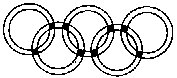
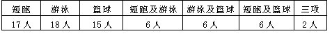

习题十二
1. 某班有50人，会游泳的有27人，会体操的有18人，都不会的有15人.问既会游泳又会体操的有多少人？
2. 在1～1000这1000个自然数中，不能被2、3、5中任何一个数整除的数有多少个？
3. 五环图中每一个环内径为4厘米，外径为5厘米.其中两两相交的小曲边四边形（右图中阴影部分）的面积相等.已知五个圆环盖住的总面积是122.5平方厘米.求每个小曲边四边形的面积。

4. 某班全体学生进行短跑、游泳和篮球三项测验，有4个学生这三项均未达到优秀，其余每人至少一项达到优秀，这部分学生达到优秀的项目及人数如下表：

问这个班有多少名学生？
5．有100位学生回答A、B两题.A、B两题都没回答对的有10人，有75人答对A题，83人答对B题，问有多少人A、B两题都答对？